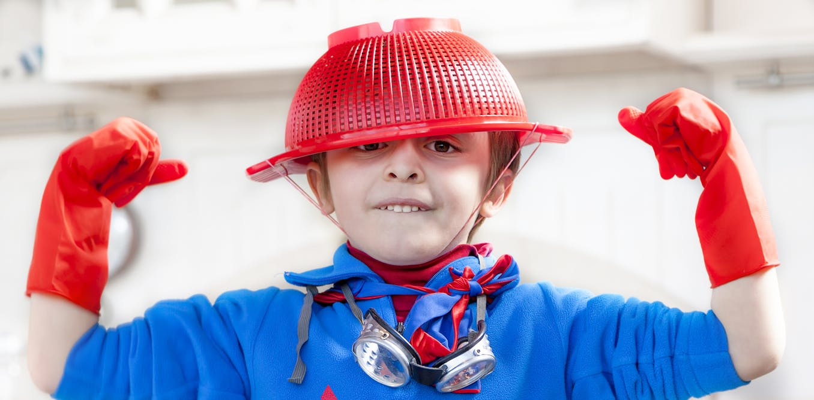

Benim adım Almirza Hashimzada. 1997 yılında bir 15 Eylül sabahında doğmuşum. İlk okulumu 2003 senesinde Azerbaycanda 249 No'lu Okulunda başladım ve 2013 yılında mezun oldum.
2013 Senesinde Bakü Petrol ve Enerji Meslek Yüksek Okuluna kabul oldum. 4 sene sonra yani 2017 senesinde mezun oldum. Azerbaycanda Meslek Yüksek Okulları da 4 senelik.

2017 senesinde hayallarimin peşinde Türkiyeye gitmeye karar verdim ve YÖS (Yabancı Öğrenci Sınavı) sınavına girerek Sakarya Üniversitesi Bilgisayar ve Bilişim Bilimleri Bölümünü kazandım.
Şuan artık 3 cü sınıftayım. Türkiyede olduğum için çok mutluyum. Hayallarimi gerçekleştirmek için büyük bir fırsat oldu benim için.